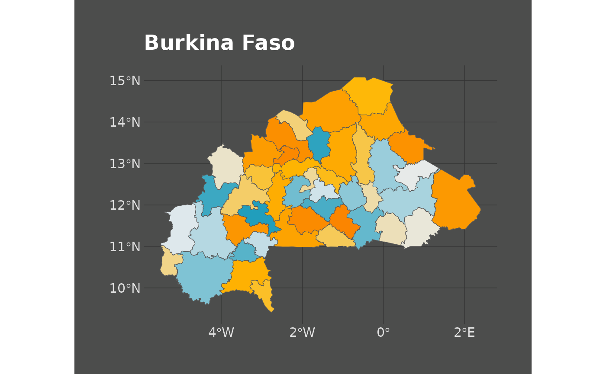
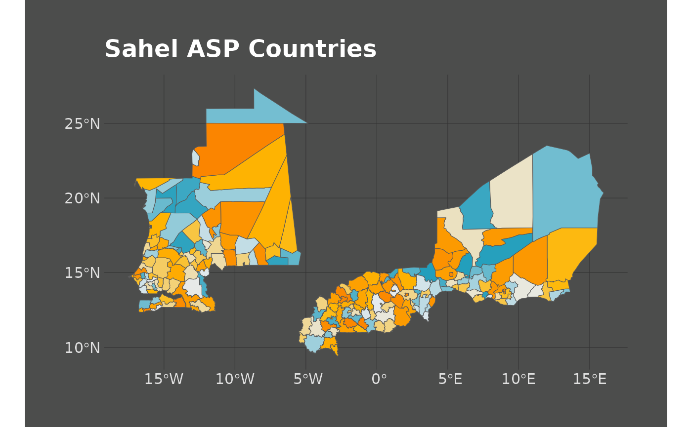

Create Sahel Maps
2023-05-24
SahelMaps.RmdSetting things up:
This vignette describes a workflow on how to easily create maps for the project with SahelGraphR. Before starting, we need to load a few packages which will be required to download the data.
library(SahelGraphR)
library(tidyverse)
#> ── Attaching core tidyverse packages ──────────────────────── tidyverse 2.0.0 ──
#> ✔ dplyr 1.1.2 ✔ readr 2.1.4
#> ✔ forcats 1.0.0 ✔ stringr 1.5.0
#> ✔ ggplot2 3.4.2 ✔ tibble 3.2.1
#> ✔ lubridate 1.9.2 ✔ tidyr 1.3.0
#> ✔ purrr 1.0.1
#> ── Conflicts ────────────────────────────────────────── tidyverse_conflicts() ──
#> ✖ dplyr::filter() masks stats::filter()
#> ✖ dplyr::lag() masks stats::lag()
#> ℹ Use the conflicted package (<http://conflicted.r-lib.org/>) to force all conflicts to become errors
library(patchwork)Once this is done, we proceed and use the
get_shapefiles() function from our package to download the
shapefiles for the desired countries at the desired level. Note that
Mauritania’s shapefiles are only availiable until level 2 and not 3.
(SEN <- get_shapefiles(country_code = "SEN", level = 2) |>
dplyr::rename(ADM2_NAME = ADM2_FR) |>
dplyr::select(ADM2_NAME, geometry))
#> Departement Level Selected
#> Simple feature collection with 45 features and 1 field
#> Geometry type: MULTIPOLYGON
#> Dimension: XY
#> Bounding box: xmin: -17.53092 ymin: 12.30777 xmax: -11.34801 ymax: 16.69373
#> Geodetic CRS: WGS 84
#> # A tibble: 45 × 2
#> ADM2_NAME geometry
#> <chr> <MULTIPOLYGON [°]>
#> 1 Bakel (((-12.66549 15.11117, -12.66378 15.11113, -12.66217 15.11114, -…
#> 2 Bambey (((-16.41398 15.02491, -16.40452 15.02327, -16.39624 15.02347, -…
#> 3 Bignona (((-15.89499 13.16475, -15.89556 13.16277, -15.89629 13.16206, -…
#> 4 Birkelane (((-15.59026 14.11543, -15.58989 14.11477, -15.58866 14.11133, -…
#> 5 Bounkiling (((-15.49857 13.39529, -15.49636 13.395, -15.49446 13.39515, -15…
#> 6 Dagana (((-15.41078 16.53676, -15.40685 16.53634, -15.40398 16.53667, -…
#> 7 Dakar (((-17.39918 14.6713, -17.39911 14.67127, -17.39909 14.67123, -1…
#> 8 Diourbel (((-16.22843 14.95423, -16.22363 14.95312, -16.21434 14.95332, -…
#> 9 Fatick (((-16.49001 14.59536, -16.48651 14.59284, -16.48172 14.5933, -1…
#> 10 Foundiougne (((-16.39603 14.14731, -16.39401 14.14674, -16.39217 14.14686, -…
#> # ℹ 35 more rows
(BFA <- get_shapefiles(country_code = "BFA", level = 2) |>
dplyr::rename(ADM2_NAME = adm2_name1) |>
dplyr::select(ADM2_NAME, geometry))
#> Departement Level Selected
#> Simple feature collection with 45 features and 1 field
#> Geometry type: MULTIPOLYGON
#> Dimension: XY
#> Bounding box: xmin: -5.513242 ymin: 9.410472 xmax: 2.40501 ymax: 15.08304
#> Geodetic CRS: WGS 84
#> # A tibble: 45 × 2
#> ADM2_NAME geometry
#> <chr> <MULTIPOLYGON [°]>
#> 1 Kadiogo (((-1.216611 12.33167, -1.215898 12.33139, -1.215505 12.33139, -1.…
#> 2 Balé (((-2.705114 11.60608, -2.70495 11.60584, -2.704798 11.60572, -2.7…
#> 3 Banwa (((-4.631655 12.05736, -4.631655 12.05736, -4.630345 12.05716, -4.…
#> 4 Kossi (((-4.232666 12.72638, -4.23253 12.72673, -4.23257 12.72711, -4.23…
#> 5 Mouhoun (((-3.495215 11.98364, -3.495108 11.98349, -3.495001 11.98335, -3.…
#> 6 Nayala (((-2.769197 12.61879, -2.769364 12.61845, -2.769412 12.61835, -2.…
#> 7 Sourou (((-3.440457 13.1593, -3.44041 13.15933, -3.43884 13.16069, -3.437…
#> 8 Comoé (((-3.969175 9.87328, -3.970301 9.871402, -3.970316 9.871277, -3.9…
#> 9 Léraba (((-5.115375 10.29121, -5.115273 10.29127, -5.114962 10.29158, -5.…
#> 10 Boulgou (((-0.108402 11.13307, -0.1167685 11.13473, -0.1251351 11.1364, -0…
#> # ℹ 35 more rows
(NER <- get_shapefiles(country_code = "NER", level = 2) |>
dplyr::rename(ADM2_NAME = adm_02) |>
dplyr::select(ADM2_NAME, geometry))
#> Departement Level Selected
#> Simple feature collection with 67 features and 1 field
#> Geometry type: MULTIPOLYGON
#> Dimension: XY
#> Bounding box: xmin: 0.16625 ymin: 11.69697 xmax: 15.99564 ymax: 23.53319
#> Geodetic CRS: WGS 84
#> # A tibble: 67 × 2
#> ADM2_NAME geometry
#> <chr> <MULTIPOLYGON [°]>
#> 1 Abala (((3.881287 15.68909, 4.012085 15.3941, 4.059692 15.29169, 4.07…
#> 2 Abalak (((6.604492 16.28528, 6.671082 16.1283, 6.752075 16.01868, 6.72…
#> 3 Aderbissinat (((10.98339 17.64841, 10.9967 17.10229, 10.9957 17.10159, 10.90…
#> 4 Aguié (((7.780273 13.70728, 7.795715 13.69031, 7.813904 13.6731, 7.82…
#> 5 Arlit (((6.394469 17.90632, 6.190251 17.90357, 6.046757 17.90634, 6.0…
#> 6 Ayerou (((1.500654 15.27511, 1.49707 15.02948, 1.496277 15.02209, 1.48…
#> 7 Bagaroua (((4.835693 14.49231, 4.859497 14.48151, 4.888672 14.49292, 4.8…
#> 8 Balleyara (((2.786499 13.87292, 2.842285 13.86151, 2.862305 13.86292, 2.8…
#> 9 Banibangou (((3.005188 15.34599, 3.009349 15.34582, 3.013916 15.34088, 3.0…
#> 10 Bankilaré (((0.9636841 14.53833, 0.9520874 14.52112, 0.9116821 14.50391, …
#> # ℹ 57 more rows
(MRT <- get_shapefiles(country_code = "MRT", level = 2) |>
dplyr::rename(ADM2_NAME = ADM2_EN) |>
dplyr::select(ADM2_NAME, geometry))
#> Departement Level Selected
#> Simple feature collection with 57 features and 1 field
#> Geometry type: POLYGON
#> Dimension: XY
#> Bounding box: xmin: -17.1016 ymin: 14.7197 xmax: -4.8333 ymax: 27.3632
#> Geodetic CRS: WGS 84
#> # A tibble: 57 × 2
#> ADM2_NAME geometry
#> <chr> <POLYGON [°]>
#> 1 Akjoujt ((-15.2212 19.0112, -15.2397 19.0162, -14.9966 19.1558, -14.923 19…
#> 2 Aleg ((-13.2468 17.3021, -13.2014 17.2625, -13.1608 17.2237, -13.1033 1…
#> 3 Amourj ((-7.1439 16.1021, -7.1226 16.0984, -6.8056 16.0426, -6.7248 16.03…
#> 4 Aoujeft ((-11.8715 19.1973, -12.0862 19.0671, -12.2453 18.9656, -12.2724 1…
#> 5 Arafat ((-15.9408 18.0502, -15.9427 18.047, -15.9453 18.0395, -15.9488 18…
#> 6 Atar ((-14.0216 19.6299, -14.0336 19.6199, -14.0392 19.6107, -14.0644 1…
#> 7 Bababe ((-13.9882 16.28, -13.9882 16.2867, -13.9886 16.2971, -13.9899 16.…
#> 8 Barkeol ((-12.2616 17.0086, -12.2631 17.0016, -12.2638 17.0051, -12.2646 1…
#> 9 Basseknou ((-6.2565 15.6607, -6.2557 16.0007, -6.7248 16.0374, -6.8056 16.04…
#> 10 Benichab ((-16.0754 18.4968, -16.0827 18.5054, -16.0876 18.5269, -16.0957 1…
#> # ℹ 47 more rowsNow that the downloads have successfully been completed, we can start plotting the maps. We start with a series of individual plots and a patchwork plot.
SEN_MAP <- ggplot2::ggplot(SEN) +
ggplot2::geom_sf(ggplot2::aes(fill = ADM2_NAME)) +
ggplot2::scale_fill_manual(values = asp_palette("Countries", 45, type = "continuous"),
guide = "none") +
ggplot2::labs(title = "Senegal") +
themeaspdark()
SEN_MAP
BFA_MAP <- ggplot2::ggplot(BFA) +
ggplot2::geom_sf(ggplot2::aes(fill = ADM2_NAME)) +
ggplot2::scale_fill_manual(values = asp_palette("Countries", 45, type = "continuous"),
guide = "none") +
ggplot2::labs(title = "Burkina Faso") +
themeaspdark()
BFA_MAP
NER_MAP <- ggplot2::ggplot(NER) +
ggplot2::geom_sf(ggplot2::aes(fill = ADM2_NAME)) +
ggplot2::scale_fill_manual(values = asp_palette("Countries", 67, type = "continuous"),
guide = "none") +
ggplot2::labs(title = "Niger") +
themeaspdark()
MRT_MAP <- ggplot2::ggplot(MRT) +
ggplot2::geom_sf(ggplot2::aes(fill = ADM2_NAME)) +
ggplot2::scale_fill_manual(values = asp_palette("Countries", 57, type = "continuous"),
guide = "none") +
ggplot2::labs(title = "Mauritania") +
themeaspdark()
MRT_MAP
# Patchwork
SEN_MAP + BFA_MAP + NER_MAP + MRT_MAPFinally, we move to merge all of the shapefiles we previously consistently named and plot the regional map. Make sure to use the same projections here!
SAHEL_MAP <- ggplot2::ggplot(rbind(SEN, BFA, MRT, NER)) +
ggplot2::geom_sf(ggplot2::aes(fill = ADM2_NAME)) +
ggplot2::scale_fill_manual(values = asp_palette("Countries", 214, type = "continuous"),
guide = "none") +
ggplot2::labs(title = "Sahel ASP Countries") +
themeaspdark()
SAHEL_MAP